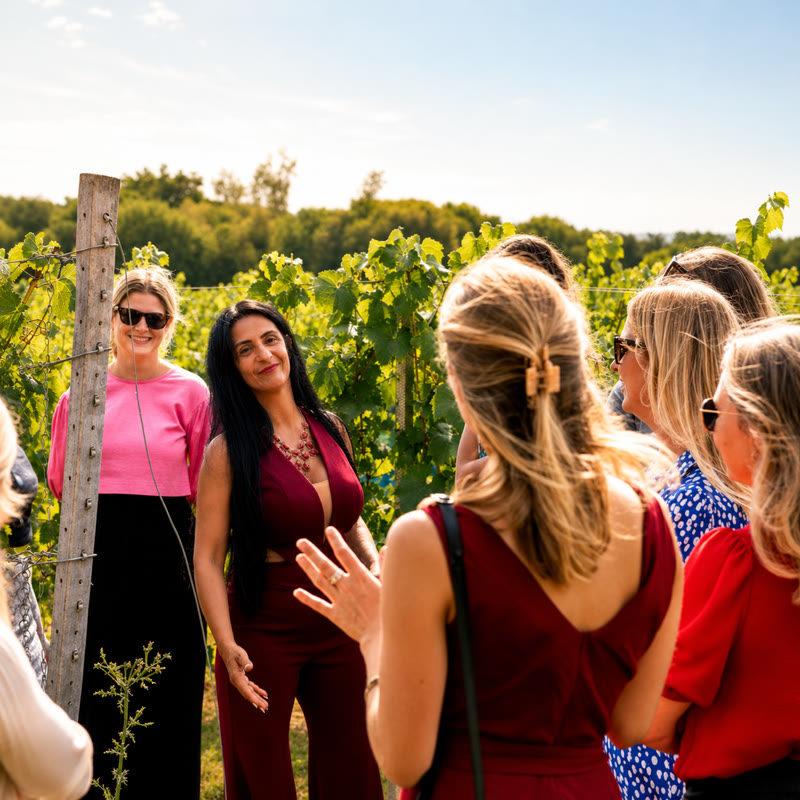
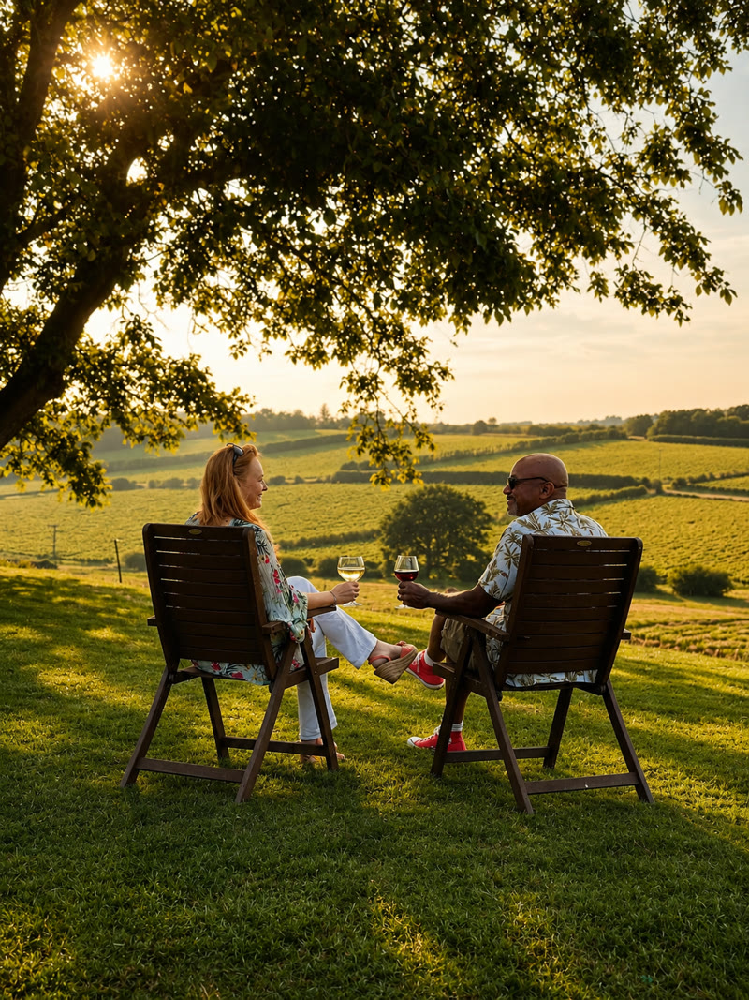
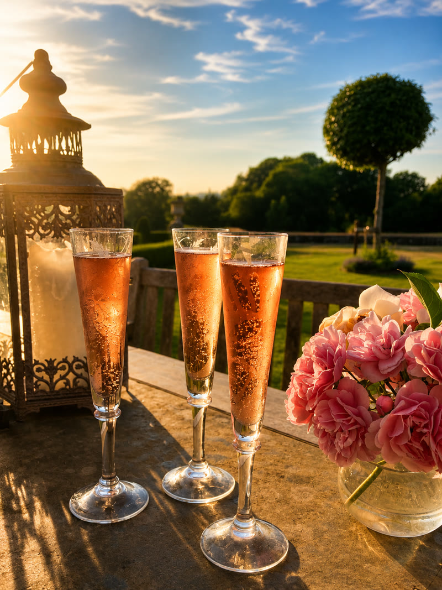

Meet the vineyards
Six estates. A different three every Sunday.
Award-winning estates across the Rother Valley. You'll visit three each Sunday.

Oxney Estate
Beckley, near Rye
England's largest single-estate organic vineyard. 35 acres of vines, a Grade II listed oast house winery, and shepherd's hut accommodation.

Oastbrook Estate
Bodiam, near Robertsbridge
A family-run vineyard with a Hobbit House, a waterside lodge, and two of the most passionate winemakers you'll meet.

Tillingham
Peasmarsh
A 13th-century estate making natural wines from 21 grape varieties. Restaurant, rooms, and bell tents in summer.

Charles Palmer
Near Hastings
Some of the oldest vines in the valley. A warm welcome and views stretching to the sea.

Sedlescombe
Near Battle
England's oldest organic vineyard. Decades of craft producing wines with character.

Mountfield
Near Robertsbridge
A stunning country estate making award-winning wines in one of the finest settings in Sussex.